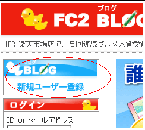
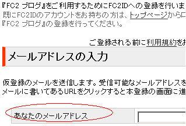
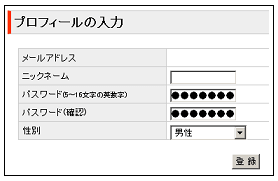
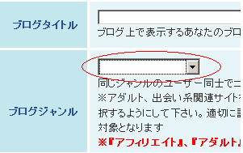
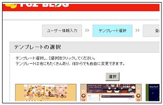
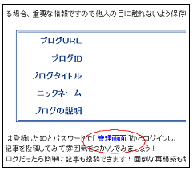
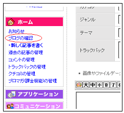
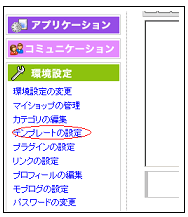
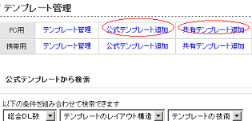

FC2ブログの作り方
FC2ブログは利用者数も多く、html の編集やアフィリエイトも自由な人気の無料ブログサービスです。
ブログの作り方自体は初心者簡単ですが、選択するブログテンプレートによっては使いやすさに違いが出てきます。
なるべくテーブルタグが使用されていなく、被リンクも要求されないような、ぶなんな感じのテンプレートを選びましょう。
FC2ブログの作り方の簡単手順
FC2ブログの作り方の手順は、まず、メールアドレスを用意してアカウントＩＤを取得し、ブログのサブドメイン（ブログのＵＲＬのこと。）を選択します。
あとはブログタイトルやテンプレートを選んで記事を投稿していくと、初心者簡単に作成できてしまうのです。
作り方の手順
-
事前準備として、ＩＤを取得する際のメールアドレスを用意しておきましょう。
持っていない場合は、ヤフーメールやＧメールなどで無料のメールアドレスを取得しておきます。 -
メールアドレスをゲットしたらFC2ブログへと行き、「新規ユーザー登録」のリンクをクリックして、上で取得したメールアドレスを入力します。
→ FC2ブログ


メールアドレスの入力をして次へ進むと、確認のために、FC2ブログからあなたのメールアドレスへ自動的にメールが送信されます。
送られてきたメールに記載されているリンクをクリックすることで確認が済み、プロフィールの入力欄に移るので、ニックネームやパスワードを登録します。

次の画面で、「引き続きFC2ブログを作成する」を選択し、サブドメイン名となるブログIDやブログタイトルやジャンルなどを入力します。

ここで、アダルトやアフィリエイトを選択する場合、あとでジャンル変更ができなくなります。
あなたのブログテーマにあった適切なジャンルを選択します。登録してから次の画面にいくと、テンプレートの選択という画面に移りますが、ここには少ししかないので、とりあえず適当に選択してから後ほどの管理画面でテンプレートを選択するといいです。

次の確認画面で中央にある「管理画面」のリンクをクリックすると、あなたのブログの管理画面へと移動できます。

管理画面サイドバーに「ブログの確認」というリンクがあるので、そこをクリックしてみると、あなたのブログが表示されます。

違うプログテンプレートに変更したい場合は、「環境設定 - テンプレート」の選択から、あなたのブログのテンプレートを変更することができます。


白猫のテンプレートあたりがかわいくていいのではないかと思いますが、なるべくならテーブルタグを使用していないシンプルな形のテンプレートがおすすめです。
テンプレートが決まったら、記事タイトルやテーマ、タグなどをふんだんに使用しながら記事投稿すると、検索にもひっかかりやすくなり、アクセスが多くなる傾向があるようです。
- ＦＣ２ホームページの作り方
ＦＣ２ホームページを作成するときはどうやら無料でできちゃうようなんです。現在のところ、ＦＣ２ホームページの無料スペースをレンタルしても広告がついてません。さらに、たいていの無料ホームページでは... - ＦＣ２ブログは何の略？
ブログ比較のページを作成している関係上、無料ブログのあれこれを詳細にご紹介したいとは思うのですが、いまいち謎の多いブログもあったりします。ＦＣ２ブログって何の略なんだろうって思ってたんですが、やっぱり...